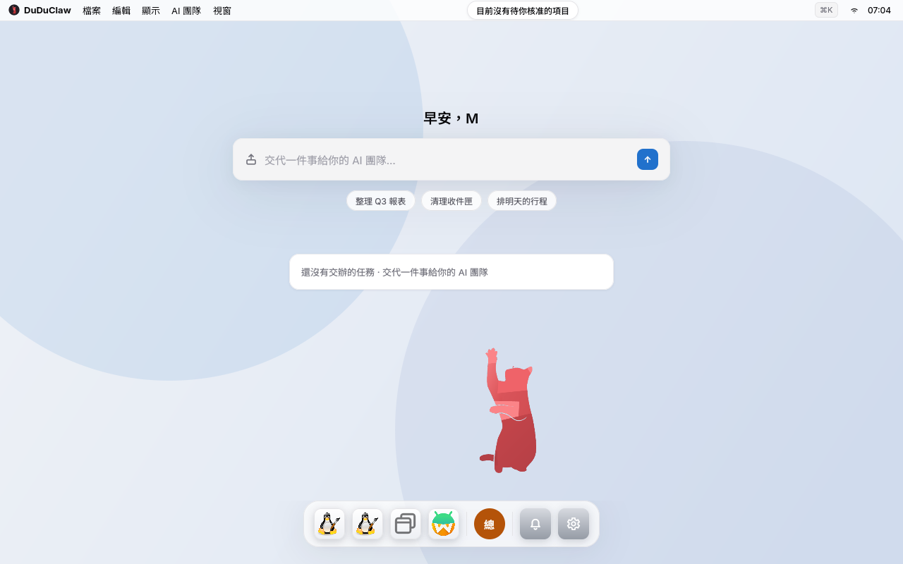
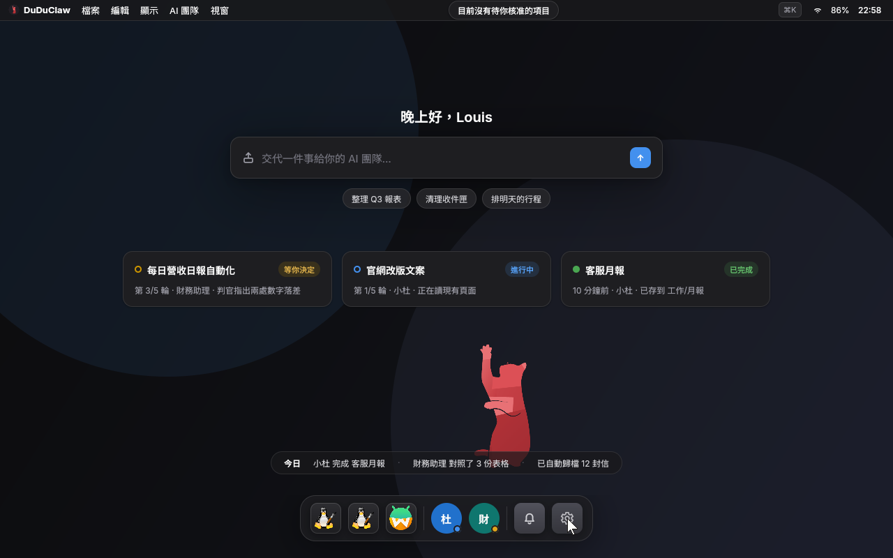
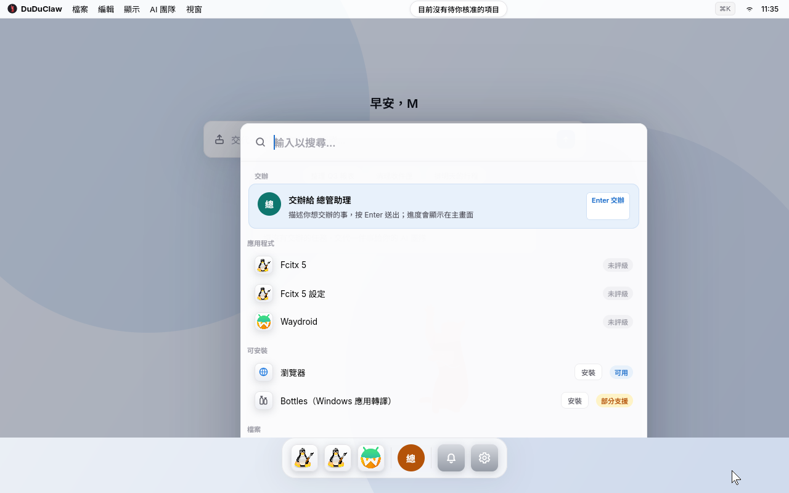
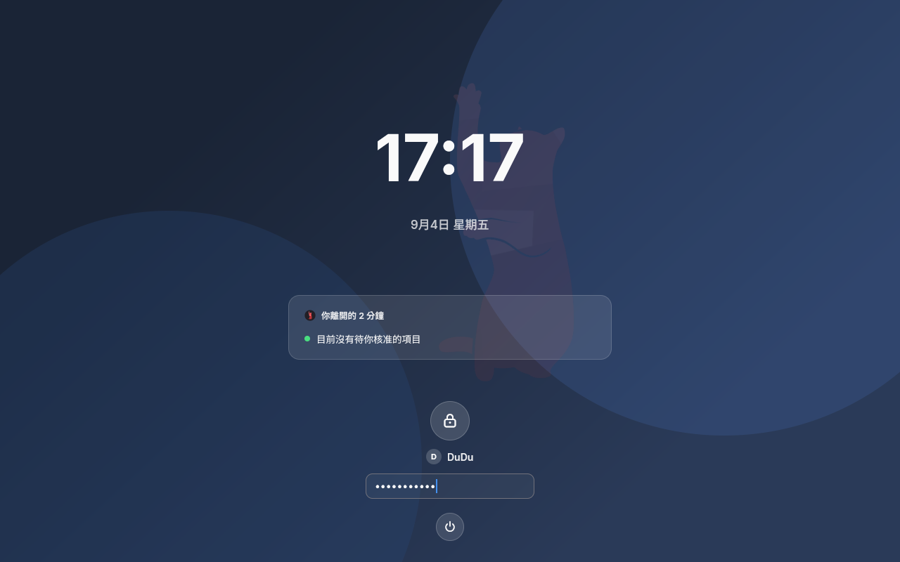
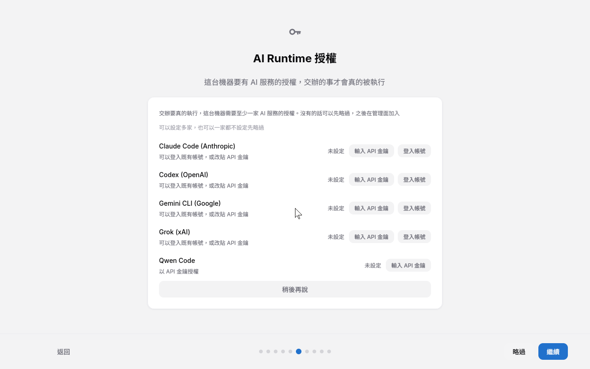
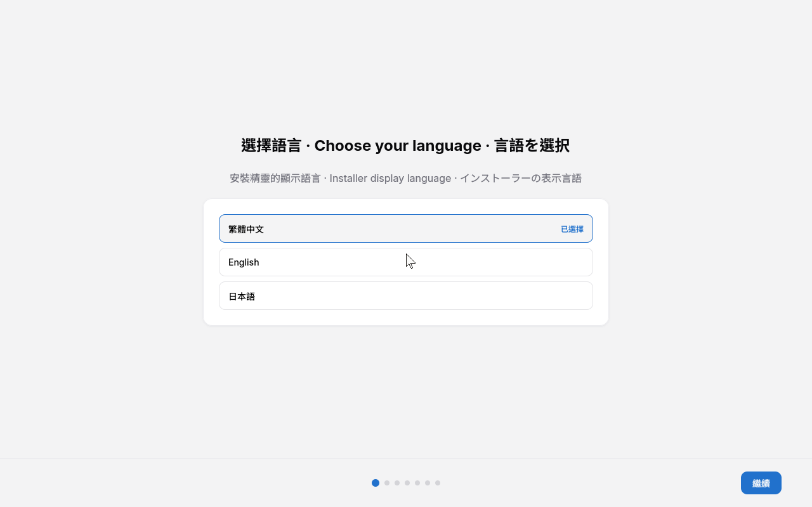

影子輸出
GUI 任務預設落在無頭的第二輸出。聊天回覆、目標迴圈、排程工作與型別化工具更是連桌面都不碰。
一般作法是在現成的 Linux 上外掛一個 agent，靠模擬你的滑鼠去搶桌面，系統沒有任何一層知道該在什麼時候擋它。
DuDuClaw OS 反過來做：compositor、桌面殼、系統服務與信任邊界都圍著 gateway 設計，AI 操作這台電腦是作業系統原生的行為，煞車也長在系統裡。
據我們查到的範圍：第一套把 agent 做進自家 compositor 的通用 Linux

duduclaw-genericx86-64 只做過設定稽核。gateway 裝在哪裡都跑得起來。差別是一般 Linux 不認識 agent：它只是一支使用者程式，要操作桌面就得模擬你的滑鼠、跟你搶焦點，權限要嘛太大、要嘛做不到。DuDuClaw OS 從桌面殼到 root 服務，每一層都為 gateway 留了位子。
據我們查到的範圍，DuDuClaw OS 是第一套把 AI agent 做進自家 Wayland compositor 的通用 Linux 發行版：agent 有專屬的輸入 seat 與影子輸出，人優先凍結與急停由 compositor 強制執行。Omarchy 把 agent 放在現成的 Hyprland 上面，差別就在這一層。
「Agent-first OS」這個名字已經有人先用。阿里雲 Alibaba Cloud Linux 4 Agentic Edition（2026 年 5 月）自稱 first Agent-first operating system，它是無頭伺服器版，沒有視窗系統；釘釘 Agent OS、階躍 Step AOS 與 Warmwind OS 各自宣稱過「全球首個」，分別是協作平台、Android 中介層與雲端虛擬桌面。所以我們只講上面那一句，範圍窄，但每個字都查得到。
查證來源：Alibaba Cloud Linux Agentic Edition · Omarchy · Warmwind OS · Step AOS 報導
duduclaw-shellagent 的前門
agent 沒有桌面入口，只能躲在一個聊天視窗裡。
duduclaw-comp認得 agent 的視窗系統
duduclaw-agent），游標形狀顏色都跟你的不同，每個事件都能歸屬稽核。duduclaw-shadow-0）跑，你的視窗、焦點、游標不受影響，想看就開子母畫面。
用 xdotool 之類模擬你的滑鼠，跟你搶同一個游標，系統層沒有煞車。
gateway 是一等公民
duduclaw.local。duduclaw-sysd，Unix socket 加 peer-credential 驗證，只認六個固定指令。/data/duduclaw 是 gateway 真正的家，十套 CLI 的憑證與本機模型都在那裡，更新不洗掉。agent 要 sudo 才能碰系統，權限要嘛整包給、要嘛什麼都做不了。
為「AI 是操作者」畫的線
agent 跑在你的帳號底下，能做的就是你能做的全部。
這四層都在 v0.2.0 映像裡；共駕預設關閉，真機驗證見上方狀態卡。
agent 的 GUI 工作預設不在你的螢幕上發生。它有自己的影子輸出，你的視窗、焦點與游標都不受影響；想看就開一個小小的子母畫面，看影片、打遊戲、開會都照常。
你的螢幕
duduclaw-comp
你一碰鍵盤滑鼠，agent 的 seat 在 3 至 4 ms 內凍結
影子輸出 duduclaw-shadow-0
GUI 任務預設落在無頭的第二輸出。聊天回覆、目標迴圈、排程工作與型別化工具更是連桌面都不碰。
想盯著就把預覽拉出來；把它拉到前台就進入共駕，螢幕會出現琥珀色邊框，接手時轉成暗紅色。
實體鍵盤滑鼠的任何事件都先讓 agent 的 seat 凍結，指令直接丟棄不排隊。Super+Enter 交還，Super+Esc 急停，兩者都由 compositor 持有。
影子工作區與共駕已編譯進 v0.2.0，預設關閉，每個 agent 各自開啟；凍結、交還、急停已用真實輸入事件在容器與 QEMU 驗證，真機尚未。Steam、Chromium、LibreOffice 以 Flatpak 預載；桌面目前走 llvmpipe 軟體渲染，GPU 加速尚未接上，重度 3D 遊戲請等硬體加速那一版。
底層的差別講完了，這一段講維運：放在櫃台後面當值班機、或交給沒有工程師的客戶，更新、回滾、防竄改與首次設定就全得自己處理。DuDuClaw OS 把這些做進映像。
| 需求 | 自己裝 Linux ＋ duduclaw | DuDuClaw OS |
|---|---|---|
| 首次設定 |
自己裝 Linux ＋ duduclawSSH 進去手動改設定 |
首次開機自動 provision，管理後台直接出現在區網 |
| 系統更新 |
自己裝 Linux ＋ duduclaw套件管理器，失敗要自己救 |
A/B 雙槽原子更新，開機失敗自動回滾 |
| 防竄改 |
自己裝 Linux ＋ duduclaw自行設定 |
唯讀 root（桌面版出貨預設）；dm-verity 逐塊驗證已接好，由建置 overlay 啟用，v0.2.0 未啟用 |
| 人與 AI 共用一台機器 |
自己裝 Linux ＋ duduclaw各開各的視窗，互不知情 |
桌面殼內建交辦列（Cmd+K）；agent 的 GUI 工作預設在影子工作區跑，不碰你的視窗與游標；你一動鍵盤滑鼠，正在你桌面上操作的 agent 立刻凍結 |
| AI 工具鏈 |
自己裝 Linux ＋ duduclaw一家一家 |
十套廠商 CLI 直接在映像裡，開機即可用；憑證存在 /data，系統更新不會被洗掉 |
| 離線推理 |
自己裝 Linux ＋ duduclaw自己編 llama.cpp、自己寫 service |
內建 llama.cpp llama-server；模型從管理後台一鍵下載到 /data/duduclaw/models，斷網也能交辦 |
基座是 Yocto Project 6.0 「wrynose」LTS 與 Linux 6.18，只針對 x86-64（x86-64-v3）建置。
系統有兩個槽，更新寫進沒在用的那一槽，重開機才切換。新槽開不起來就自動切回舊槽，不會停在半更新的狀態。
桌面版出貨預設把系統分割區掛成唯讀，你的資料、設定與 AI 憑證寫在獨立的 /data，系統更新不會清掉。
Wayland compositor duduclaw-comp 加上桌面殼 duduclaw-shell：首頁、視窗切換、鎖定畫面、控制中心、通知中心。搭配 PipeWire 與 XWayland。
在任何 app 上按下去（OS 殼上顯示為 Super）都能叫出交辦列，第一個結果永遠是交辦給 AI 員工，進度回到首頁看。
agent 有自己的輸入 seat，GUI 任務預設在影子工作區跑；你一碰鍵盤滑鼠，compositor 層立刻凍結它。細節見上方「你的遊戲照打 agent 的事照做」。
claude、codex、gemini、qwen、kimi、copilot、grok、agent（Cursor）、opencode、vibe 都在映像裡，登入即用。憑證統一存在 /data/duduclaw。
內建 llama-server，權重不進映像，由管理後台下載到 /data/duduclaw/models。斷網的時候也能交辦。
Chromium 與 LibreOffice 從 Launcher 一鍵安裝，不需要網路；其他軟體走 Flathub。輸入法是 fcitx5 注音。
Bottles 跑 Windows 桌面程式，KVM 虛擬機加 RDP 跑完整 Windows，Waydroid 跑 Android（不含 GApps）。macOS 程式不在支援範圍。
以下六張都是 DuDuClaw OS v0.2.0 在 QEMU 上的實際畫面。
開機第一眼就是交辦列。上面是待核准提示，中間是輸入框與常用交辦，下面是進行中的任務與 Dock。
同一個首頁的深色主題。任務卡顯示每件事跑到第幾輪、由哪位 AI 員工負責、目前狀態，最下面一列是今日摘要。

按 Super+K 叫出來，第一個結果永遠是交辦給 AI 員工，往下才是應用程式、可安裝項目與檔案。

鎖著的時候也看得到值班摘要：你離開多久、有沒有待你核准的項目。

首次設定精靈的其中一步。登入既有帳號或貼上 API 金鑰都可以，一家都不設也能先略過，之後在管理後台補。

安裝器 ISO 開機後的第一步。安裝精靈提供繁體中文、English、日本語三種顯示語言。
安裝 8 分鐘 從插上 USB 到交辦第一件事，中間不需要開終端機。
下載安裝器 ISO 或整碟映像，用 minisign 與 SHA-256 驗簽之後寫進 USB 或硬碟。
語言、帳號、主題、Wi-Fi 在圖形精靈裡一路點完，不必開終端機。
在 AI Runtime 授權頁登入既有帳號或貼上 API 金鑰。憑證存在 /data/duduclaw，系統更新不會清掉。
按 Super+K 叫出交辦列，描述你要的事，AI 員工排隊接手，進度回到首頁看。
三個硬性條件都符合才裝得起來。DuDuClaw OS 只建置 x86-64（x86-64-v3 tune）。
Intel Haswell（2013 年）以後、Intel N100 / N200 / N305、AMD Excavator（2015 年）以後與 Zen 全系都符合。
不支援 arm64
Apple Silicon、樹莓派與 ARM 迷你主機都不能用。
純 legacy BIOS 的機器不在支援範圍。v0.2.0 映像未簽章，開機前要在韌體裡關閉 Secure Boot。
A/B 雙槽佈局會同時放兩份系統，機械硬碟的隨機讀寫撐不住日常使用。
| 配置 | CPU | 記憶體 | 硬碟 |
|---|---|---|---|
| 最低 | 支援 AVX2 的 x86-64 | 4 GB | 64 GB SSD |
| 建議 | Intel N100 / N305 或 Ryzen 5 | 8 GB | 128 GB SSD |
| 舒適（遊戲、本機 LLM） | Ryzen 7 8845HS | 16 GB 以上 | 256 GB SSD 以上 |
不需要獨立顯示卡，目前的桌面走 llvmpipe 軟體渲染。
| 定位 | 機型 | 備註 |
|---|---|---|
| 入門 | Intel N100 迷你主機（Beelink、GMKtec） | 約 NT$4,000 至 6,000，無風扇 |
| 均衡 | Beelink SER 系列（Ryzen）、Intel NUC | 日常使用與多開都夠 |
| 目標機 | Intel N305 或 AMD Ryzen 7 8845HS 迷你主機 | 專案的參考機種 |
這一段照實列。v0.2.0 出貨的映像有哪些保護、哪些只是接好了程式碼但沒啟用，分開講。
/data。
所有 v0.2.0 資產都用這一把簽。公鑰釘死在這裡，換版本不會換。
RWQyI00ugZ/+WVisQ2ZnKeTqFs8Ze8h2X11FO9Z8le0YubFMXYTwQD7n兩種都提供圖形安裝精靈的 ISO；桌面版另外提供可以直接寫進整碟的映像。
日常主力機，人和 AI 共用
無頭 gateway 值班機，接不接螢幕都行
管理後台由 gateway 提供，接不接螢幕都能從區網的瀏覽器操作 http://duduclaw.local。
OS 本身的說明在 DuDuClaw-OS repo，平台功能的說明在 DuDuClaw repo。